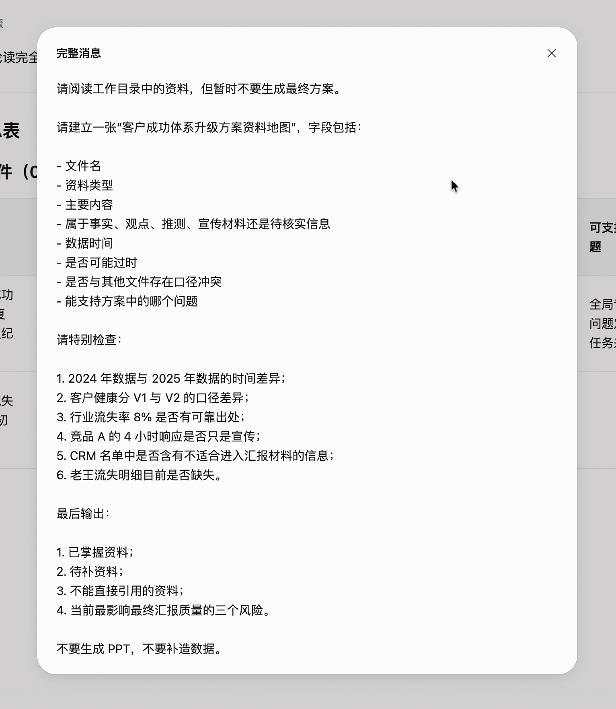
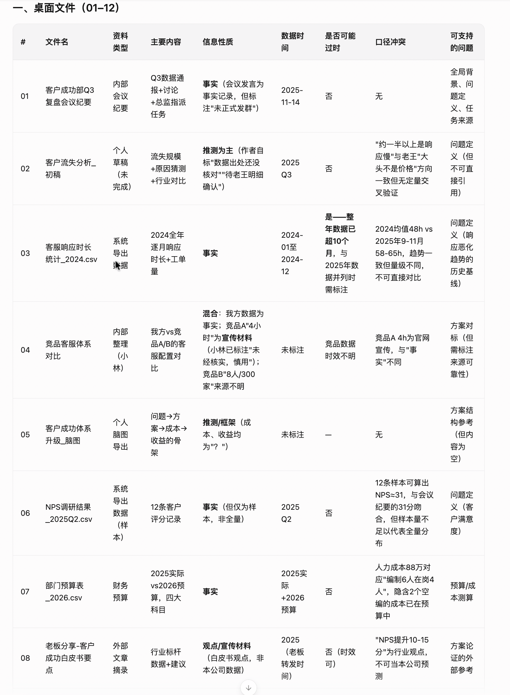
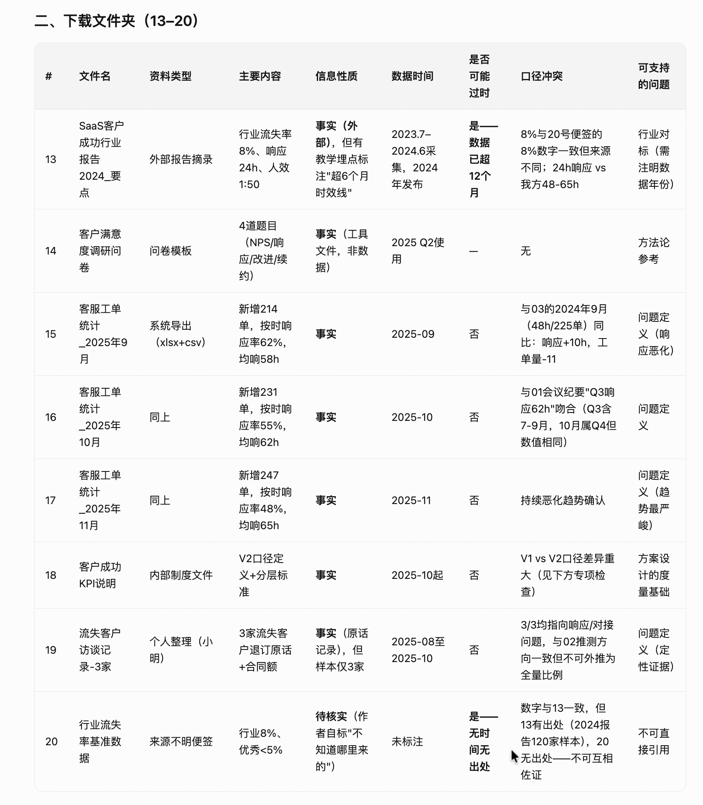
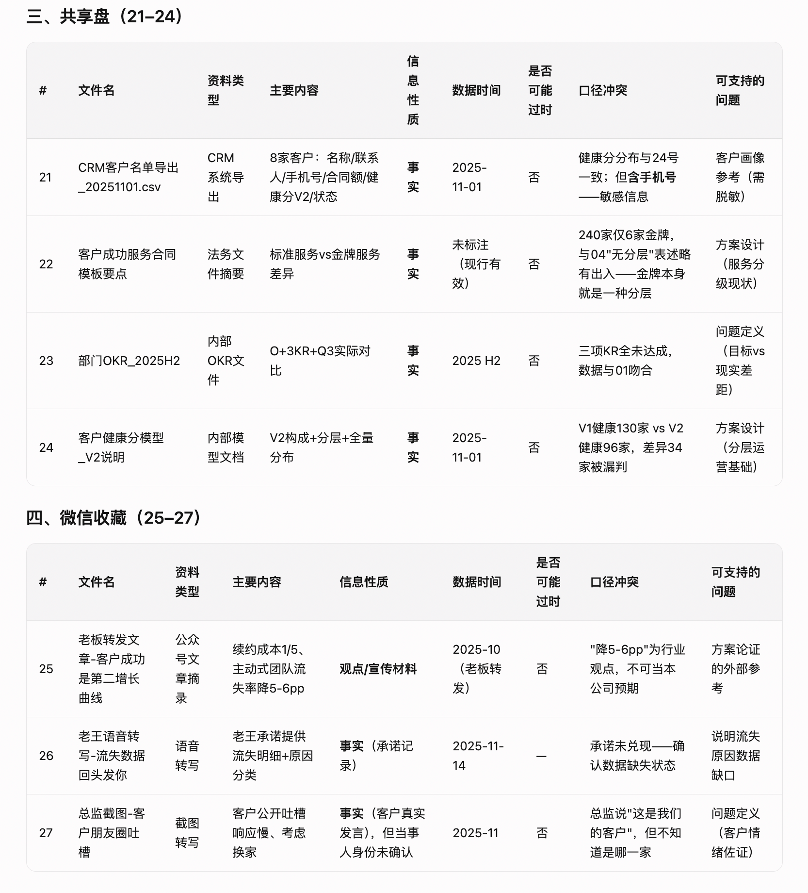
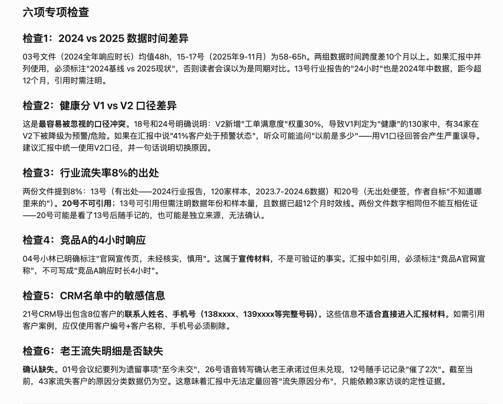
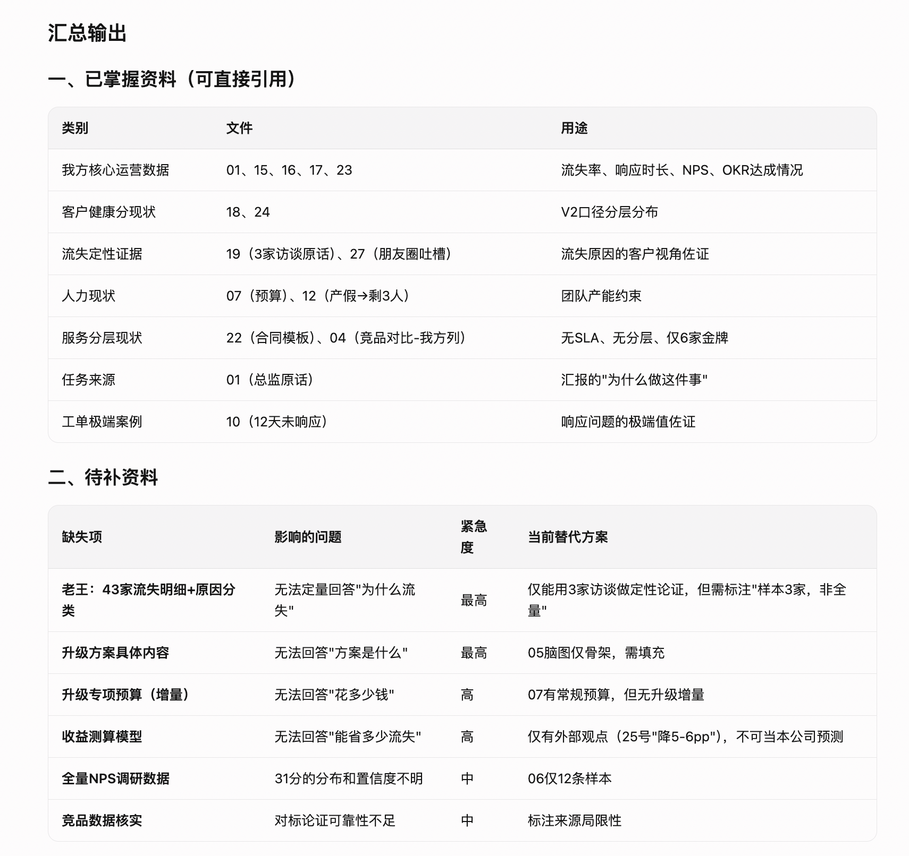
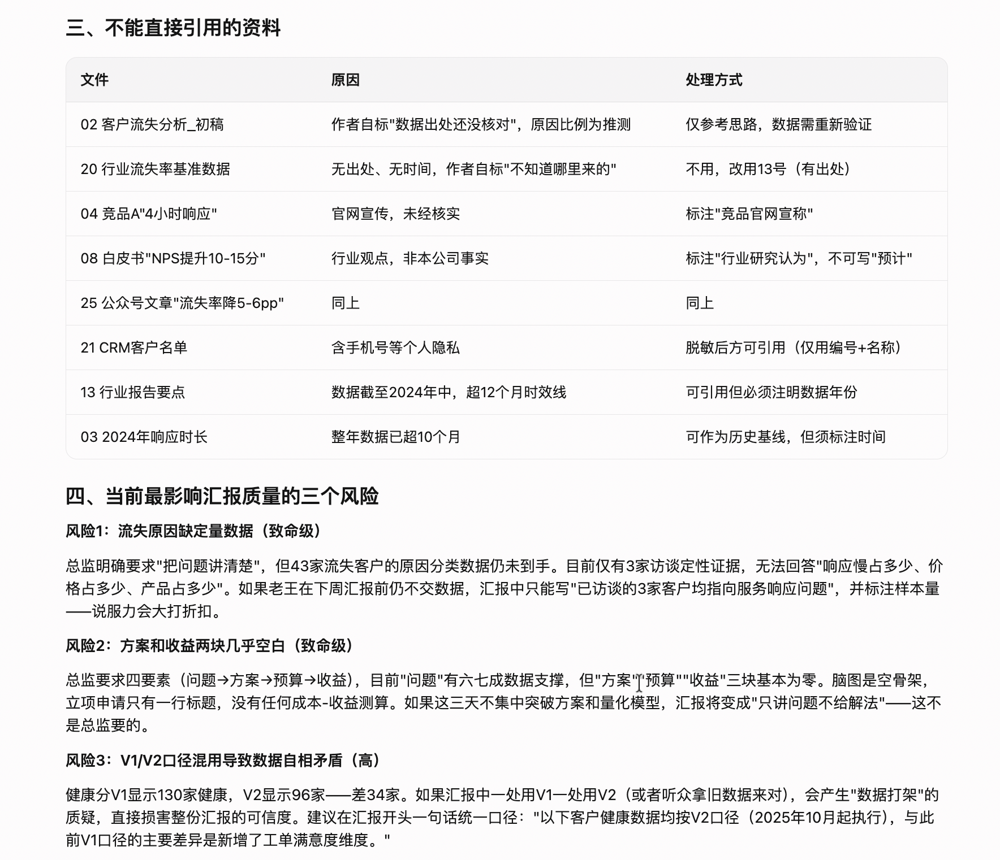

案例 01 · 小明的交付升级记
第三章 · 27 份资料如何变成资料地图
从“我有一堆文件”推进到“每份文件能支持哪个业务问题”。
任务方向确定后，小明还不能急着写汇报。他需要知道每份材料的角色、时效、冲突和可引用边界，于是开始第二轮资料地图。
小明
27 份文件我都打开过，可越看越像一桌没贴标签的零件。

小触
GTD 不是把文件堆在一起，而是给每份资料安排位置：它证明什么，什么时候有效，能不能引用。
小明
那资料地图其实是在替我清理注意力，告诉我下一步该找谁、补什么。
小触
没错。AI 可以帮你分拣，但“这份证据够不够”仍然要由人负责。
本章交付卡
每一章都把“资料 → 指令 → AI 产出 → 人工判断 → 结果状态”拆开，读者可以快速判断这一环到底完成到哪里。
输入资料第一轮任务理解结果 + 工作目录内 27 份资料。
使用指令建立资料地图，检查时间差、V1/V2、行业数据、竞品宣传、敏感信息与老王明细。
AI 产出文件级资料地图、已掌握资料、待补资料、不可直接引用项和三大风险。
人工判断这一轮仍是 AI 初版；需要人确认文件真伪、权限和业务口径。
最终结果得到可供后续核验的证据目录，而不是一份未经筛选的素材堆。
请阅读工作目录中的资料，但暂时不要生成最终方案。
请建立一张“客户成功体系升级方案资料地图”，字段包括：文件名、资料类型、主要内容、属于事实/观点/推测/宣传材料/待核实信息、数据时间、是否可能过时、是否与其他文件存在口径冲突、能支持方案中的哪个问题。
请特别检查：2024 与 2025 数据时间差异；健康分 V1/V2 口径；行业流失率 8% 出处；竞品 A 的 4 小时响应是否只是宣传；CRM 是否含不适合汇报的信息；老王流失明细是否缺失。
最后输出：已掌握资料、待补资料、不能直接引用的资料、最影响汇报质量的三个风险。不要生成 PPT，不要补造数据。
资料先分类
事实、观点、推测、宣传材料和待核实信息，不再混在同一张表里。
冲突要显形
2024/2025 时间差、V1/V2 口径、8% 行业流失率和竞品宣传必须单独拉出来。
风险要可行动
缺老王明细、缺方案预算、缺收益测算，直接变成下一轮的补料清单。
真实推演证据 · 第二轮资料地图
8 是第二轮指令，9—14 是千问办公按字段和专项检查展开的输出。图片文字较小，点击图片可在当前页放大查看。
{kind=link}

{kind=link}

{kind=link}

{kind=link}

{kind=link}

{kind=link}

{kind=link}

资料地图不是人工验收
AI 能把风险找出来，但不能替小明决定哪份行业报告可以正式引用，也不能替组织确认 240 家客户基数的统计时点。下一章要做的是：基于补齐资料形成数据结论，并把证据等级说清楚。